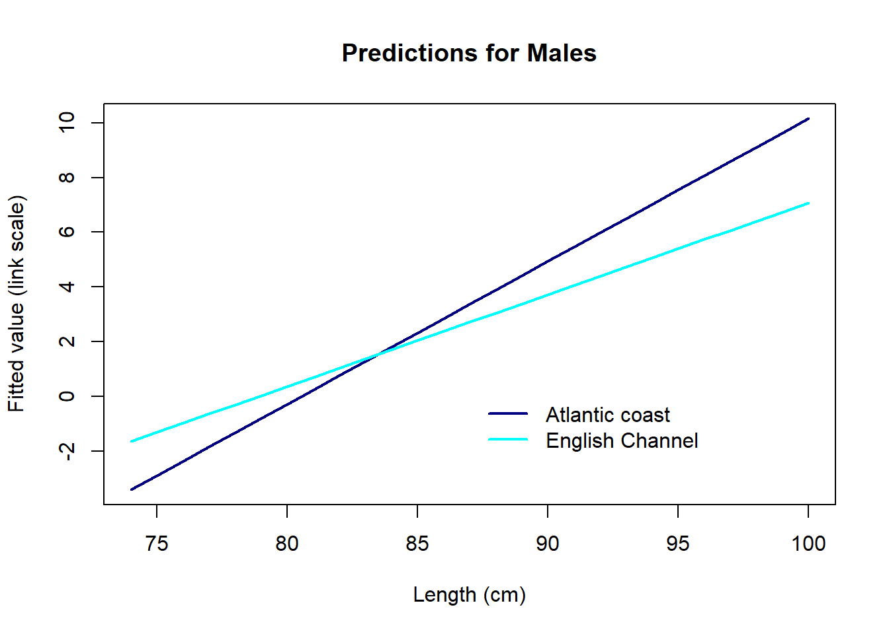

Exercise
Exercise: Binomial (Bernoulli) GLM - Maturity-length relationship in rays
1. The data for this exercise consist in records of Undulate Ray (Raja undulata) along the French Altlantic coast and the English Channel. The question of interest here is to estimate the size at which individuals become sexually mature. This is important in order to predict the dynamics of the population and possibly for setting fishing quotas. It has also been shown in other species that overfished stocks tend to mature earlier in response to the selection imposed by fishing mortality.
- Variables:
Lglength (cm). Individuals less than 74 cm were excluded from the dataSex: “F” or “M”.Area: “ATL” or “ECH” for Atlantic and English Channel, respectively.Month: numericYear: numericMature: “0” for immature and “1” for mature.
We will construct a model of the probability of being mature, to address the following questions:
- Primary research question:
- How does the probability of being mature change with body length?
- Secondary research questions:
- Does this maturity-length relationship differ between areas (possibly as a result of different fishing pressures)?
- Does this maturity-length relationship differ between sexes?
2. Import the data file ‘RayMaturity.csv’ into R. As in previous exercises, either create a new R script (perhaps call it GLM_RayBin) or continue with your previous R script in your RStudio Project.
3. Let’s first take a look at the structure of this dataframe, and do an initial data exploration. 0/1 data (Bernoulli) are more difficult than most to explore. We will start by looking for any correlation/data imbalance (different sample sizes between portions of a predictor variable) for the all predictors (for example Lg, Sex, and Area)
- Notes:
- One approach for data imbalance is to count the number of observations per categories of the predictors of interest.
table()is a useful way to count the number of observations per category or combinations of categories, e.g.Obs.Per.F1.F2<- table(Factor1, Factor2)stores the number of observations per category ofFactor1andFactor2in a tableplot(Obs.Per.F1.F2)returns a “mosaic plot” where the area of each rectangle is proportional to the count.
Below is an example with Year and Month (see the code). Use the same approach for other variables. For example, is there is an even representation of sexes in the two areas?
# count the number of observations per month, and per year:
table(dat$Month)##
## 4 5 6 7 8 9
## 253 294 300 98 114 89# majority of the data are from April-May-June
table(dat$Year)##
## 2012 2013 2014
## 60 537 551# count observations per year/month combination and represent as mosaicplot
Obs.Per.Year.Month<- table(dat$Year, dat$Month)
# See what's in the table:
Obs.Per.Year.Month##
## 4 5 6 7 8 9
## 2012 0 29 8 20 0 3
## 2013 105 75 182 40 114 21
## 2014 148 190 110 38 0 65# Year in rows, Months in columns
# mosaic plot (this is the default plot for a contingency table in R)
plot(Obs.Per.Year.Month)
# fewer observations in 2012 (column is narrow)
# variable sample size from each month from April to Sept (height / area of the squares varies)
# but overall a fairly "random" representation of all months across years,
# so should not be problematic
# (for example, an issue might arise if all observations from Spring
# came from one year and all Summer observations from a different
# year, hence not comparable maybe)Next we look for factors affecting the probability of maturity. Which ones are continuous or categorical?
- Notes:
- The data are not probabilities of maturity, they are just 0 and 1’s. We can’t visualise probabilities of maturity unless we average the data for groups of observations
- For exploring the effect of discrete predictors on the probability of maturity (response), you may calculate mean maturity per category, which is the proportion of mature individuals:
bla<- tapply(dat$Mature, list(dat$FactorOfInterest), mean)and plot this usingbarplot(bla, type= "b", ylim= c(0, 1), xlab= "FactorOfInterest", ylab= "maturity") - For the effect of continuous predictors on the response, the best approach is to treat the continuous variable as discrete (using
as.factorfor example), for the data exploration.
Below is an example with Sex. Repeat with other relevant predictors.
# Maturity in relation to Sex
mean.per.Sex<- tapply(dat$Mature, list(dat$Sex), mean)
barplot(mean.per.Sex, ylim= c(0, 1),
xlab= "Sex", ylab= "proportion mature")
# Probability maybe higher in males?
4. Time to fit a model to address some of the research questions. For simplicity, we will ignore Sex and Month for now, but if you wish, you can investigate them in your own time later. Because most of the data are males, first create a subset of the data with only the males data. For this new data set, specify a Binomial GLM looking at the effects of length and area, and whether the effect of length varies between areas (using glm() and the appropriate family argument). Hint: do you need to include an interaction term?
5. Obtain summaries of the model output using the summary() function.
- How do you interpret each term?
- what is the
Intercept, and which categories does it refer to? - what is the
Lgeffect, and which category does it refer to? - what is the
AreaECHeffect? - what is the
Lg:AreaECHeffect, and which category does it refer to?
- what is the
6. Do you need to simplify the model? Use drop1 to find out, with the appropriate test distribution (Chi-squared).
7. Let’s now produce plots to validate the model, using Pearson residuals and the usual model validation tools. Are they helpful?
8. These plots are not very useful, because the data are 0/1 and thus the individual residuals (difference between the 0/1 observations and continuous fitted values) follow weird patterns. But we can actually get a bit further by taking the mean of groups of residuals (groups being the levels of a predictor). The idea is that if there is no trend in the residuals, these means should be randomly distributed around zero (and ideally, close to zero as well). The binnedplot() function in the arm package does exactly that. for numerical variables, binnedplot() splits the variable into discrete bins, and calculates the mean of the residuals for each bin. binnedplot() requires numerical variables: binnedplot(x= MyContinuousPredictor, y= MyResiduals, xlab= "MyContinuousPredictor", nclass= NumberOfBinsWanted). If needed you can convert categorical predictors into numerical: binnedplot(x= as.numeric(MyFactor), y= MyResiduals, xlab= "MyFactor").
Here is an example using binnedplot with Month (even if it is not in the model, but to see if it should). You can try yourself with area, and body length.
library(arm)
par(mfrow= c(1, 1))
binnedplot(x= datM$Month, y= res2.p, xlab= "Month", nclass = 6)
# nclass= 6 because we have 6 months in the dataWe want residuals to be close to zero, but how far is too far?
binnedplotconveniently adds expected limits (grey lines), beyond which the the fit of the model is questionable. Here the residuals per month are close to the limit, and even outside for August: includingMonthwould probably improve the model a bit.
9. Are you happy with the diagnostic plots?
10. Assuming that the model is fine as it is, let’s plot the predictions of the model in relation to length Lg for the Channel and the Atlantic coast. For the sake of understanding how the models works, let’s start with predictions on the link scale type= "link". What do these numbers represent?
# create a sequence of increasing lengths
Seq.Length<- 74:100
# PREDICTIONS FOR MALES ON THE ATLANTIC COAST
dat.new.ATL<- data.frame(Sex= "M", Lg= Seq.Length, Area= "ATL")
Mat1.pred.ATL<- predict(Mat1, dat.new.ATL, type= "link", se.fit= T)
# Add them to the prediction data frame, to keep the workspace tidy
dat.new.ATL$fit<- Mat1.pred.ATL$fit
# Same approach for MALES IN THE ENGLISH CHANNEL
dat.new.ECH<- data.frame(Sex= "M", Lg= Seq.Length, Area= "ECH")
Mat1.pred.ECH<- predict(Mat1, dat.new.ECH, type= "link", se.fit= T)
dat.new.ECH$fit<- Mat1.pred.ECH$fit
# PLOTTING THE TWO AREAS TOGETHER
par(mfrow= c(1, 1))
# plot predictions for Atlantic coast
plot(x= Seq.Length, y= dat.new.ATL$fit,
type= "l", lwd= 2, xlab= "Length (cm)",
ylab= "Fitted value (link scale)",
main= "Predictions for Males", col= "navy")
# Add predictions for English Channel
lines(x= Seq.Length, y= dat.new.ECH$fit, lwd= 2, col= "cyan")
legend(x= 87, y= 0.3, legend= c("Atlantic coast", "English Channel"),
lwd= 2, col= c("navy", "cyan"), bty= "n")
The predictions on the link scale are linear, as they should be. But they represent the log-odds of being mature: # For a body length of 75 cm for example, a ray in the English Channel has log-odds of being mature of about -1.6: not exactly the most intuitive thing to interpret!
11. The default link function for the binomial GLM is the logit function, log(p/(1-p)). And the fitted values can be transformed using exp(fitted.value) / (1 + exp(fitted.value)). You can use this formula to back-transform your predictions, but this is a bit cumbersome to write. R provides the function plogis which does the same calculation. Use plogis or the back-transformation formula to compute the predicted values on the probability (response) scale, and plot them against length, for each area.
Optionally, you may add the confidence intervals around the predictions (this would be highly recommended in a report).
- Calculation of confidence intervals:
- As for the Poisson GLM, you will need to calculate the lower and upper bounds of the 95% CI on the link scale (same method)
- Only then, convert these confidence limits to the response scale, using
plogis(different from the Poisson GLM, since the link function is different)
12. How satisfied are you with the model, and with all the assumptions being met? What have you learned from it, with respect to the initial aims of the study?
End of the Binomial (Bernoulli) GLM exercise - Maturity-length relationship in rays
Note: If you cannot install the arm package and access its binnedplot function, you can use this “DIY” alternative instead, in the code chunk below. The green line shows the mean of the residuals for each value or bin of the X variable.
par(mfrow= c(1, 1))
# plot the residuals against length
plot(res2.p ~ datM$Lg, col= datM$Mature + 1)
# get the mean of the residuals for each 1 cm of length
lg.means<- tapply(res2.p, list(datM$Lg), mean)
# convert ordered bin labels into numbers (1 to 365)
lg.vals<- as.numeric(names(lg.means))
lines(lg.means ~ lg.vals, col= 3)
abline(h= 0, lty= 3, col= grey(0.5))
Optional. If you are curious about the Sex effect, you can add it in the model. Note that as well as differences between areas, there may be an interaction between length and sex (Males and Females reach maturity at different rates). Simplify the model if necessary, validate, and plot the predictions for all areas and sexes. Remember to use the original, full data set with the females in!
What can we infer from this, with respect to the initial aims of the study?